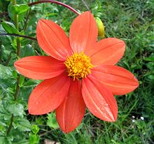

SAFARI
Users
Sunflower Seeds
[Helianthus annuus]
Pictured are are the seeds of the giant sunflower, which grows flower heads that can be more than a foot across. The record height was 40 feet, achieved in Northern Italy, but they are normally less than 12 feet tall, The sunflower originated in Mexico, but by the time of Columbus it was grown as far north as the Mississippi valley. American Indians used it for food, oil and war paint.
The giant sunflower became widely planted in Russia and Ukraine because
the oil from its seeds was approved by the Orthodox Church for use during
Lent. Sunflower oil and eating sunflower seeds are now closely associated
with Russia and the Black Sea region.
Sunflower Seed Oil
[Helianthus annuus]
Sunflower seed oil is called for in many recipes from Russia, Ukraine and the Black Sea region in general. This is because the Orthodox Church has not forbidden its use during lent and other "fast days". It will go to the high frying temperature of 450°F/235°C, but it is 72% polyunsaturated fats, so it degrades very rapidly into rancidity. The products of rancidity, aside from smelling and tasting bad, can be carcinogenic.
The fast food industry was urged by the do-gooders to use "vegetable" oils of this type instead of safe, durable beef tallow. The industry found these seed oils (including corn and soybean oil) degraded to unusability within a few hours (beef tallow would hold up for a month). Health issues aside, they could not tolerate the bad taste, smell, and the cost of changing their oil twice a day. Lacking other options, they turned to deadly trans fats instead.
Now that trans fats are known to be far more dangerous than beef tallow, the fast food industry is turning to genetically engineered "high oleic" seed oils, including sunflower. These oils mimic the composition of olive oil (olive oil is too expensive and in too limited supply for fast food use). These "high oleic" oils are not yet common in consumer markets.
For all these reasons, we recommend using sunflower oil only as salad oil or for short, low temperature frying tasks. Definitely do not re-use this oil. Of course, our CloveGarden Medical Disclaimer applies here.
Jerusalem Artichoke / Sunchoke

[Sunroot; Topinambour (French and other European); Helianthus tuberosus | Helianthus maximiliani Maximilian sunflower]
"Sunchokes", as they are now most frequently marketed, are the root tubers of a variety of sunflower. This plant is aggressively productive but the tubers have been prevented from becoming a major food crop by having a more distinctive flavor than potatoes, and being 75% inulin rather than starch (of which they have none). This can produce flatulence and gastric distress in persons not accustomed to consuming inulin. Others consider inulin an important health food.
H. maximiliani was used similarly to the Jerusalem Artichoke by
the Plains Indians, but it is no longer in use, the Plains Indians having
been driven from the land. For interesting details on the history,
naming and best methods of culinary preparation of this interesting root
tuber, see Details and Cooking.
Prairie Sunflower
 [Helianthus petiolaris]
[Helianthus petiolaris]
This widespread sunflower is found in all the south-central provinces of
Canada and all of the United States except the deep southeast, and is
often considered a weed. This taprooted annual grows to about 4 feet high
with flowers similar to those of the regular sunflower but much smaller.
The seeds are edible but small. They can be ground into an oily meal, or
can be used to make a kind of butter. I am not sure they are currently
in use, but were probably used by American Indians.
Photo by U.S. Department of Agriculture = Public Domain
.
Safflower
[Carthamine (19th century); Carthamus tinctorius]
Safflower has been cultivated since the time of Ancient Egypt for oil, seeds and color, both for dyes and to color food. Today, the largest producers are India, the United States and Mexico, primarily for oil pressed from the seeds. Seeds are often used in bird seed mixes (where the photo specimens came from) because squirrels don't like them.
Safflower Oil: Two varieties are grown for oil. One produces
oil very high in polyunsaturated fats, the other with a little more
monounsaturated fats. The variety with more monounsaturated fats predominates
as an edible oil, the other is used for paints in place of linseed oil,
particularly for white as it has no tint.
Salsify - Common
[Oyster Plant, Vegetable Oyster, Common Salsify, Purple Salsify, Goatsbeard: Tragopogon porrifolius]
Native to the Mediterranean region of Europe, this plant has been introduced to other regions, and now grows wild in almost every state of North America (except the deep Southeast). Salsify has been known to herbalists since ancient times and has been grown not only for its flowers, but for edible roots and stems. The roots are noted for tasting like oysters, thus the alternate names.
This vegetable was popular in England in the 18th century but today
is eaten mostly in France, Italy and Russia. It has, however, in recent
times often been displaced by Spanish Salsify (Black Salsify,
Scorzonera hispanica), a different genus with much broader leaves
and yellow flowers rather than purple. The photo specimens were
20 inches long, the root parts being about 7 inches and almost 3/4 inch
diameter at the top. Details and
Cooking.
Salsify - Black
[Spanish salsify, Black oyster plant, Serpent root, Viper's herb, Viper's grass, Scorzonera; Scorzonera hispanica]
Native to the Near East and souteastern Europe, this salsify has much
wider leaves and longer roots than common salsify, and the roots
are very dark brown with a corky bark. It is now grown mosltly in Belgium,
France, Netherlands, and Germany. It has yellow flowers, while Common Salsify
has purple flowers.
Details and Cooking.
Photo by Benreis distributed under license Creative Commons
Attribution-ShareAlike v4.0 International.
Burdock Root / Gobo
[Greater Burdock, Beggar's Buttons; Gobo (Japan); Ueong (Korea); Bardana, Garduna (Portugal); Arctium lappa]
This plant, native from Scandinavia to the Mediterranean and from the British Isles to Japan, can grow to over 9 feet tall, with a tap root extending more than a yard into the ground. Burdock is usually grown in raised beds of soft soil because harvesting the roots would otherwise be very difficult.
While burdock was once a significant food item over much of Europe,
it is no longer so much used there, but is very much used in East Asia,
particularly Japan, Taiwan and Korea. It is also still used in Portugal,
Italy, and Brazil. In Japan very young roots are cooked pickled and
dyed orange for use in sushi bars, for what is called "Carrot Roll"
here in California. Young leaves and stems are also edible.
Details and Cooking.
Yacón
[Peruvian ground apple; Jicama (Ecuador); Smallanthus sonchifolius]
This plant is native to the Amazon side of the Andes Mountains of South America, from Colombia to northern Argentina. The storage roots, which may reach a weight of as much as 2 pounds, are sweet and juicy. Like Jicama (unrelated) they are most often eaten fresh and raw. The sweetness is from fructooligosaccharide, about half the sweetness of cane sugar, but totally indigestible, thus low in calories. Leaves are often used to make teas which are prebiotic and high in antioxidants.
Due to ability to build a market as a weight loss aid, and from it's
diabetic and prebiotic characteristics, yacón has been planted in
southern Australia, Tasmania and New Zealand. It spread from there to
Japan, the Philippines, China and South Korea. Due to attention given it
in Japan, it has now been introduced to the cities of South America,
and is even sometimes seen in farmer's markets in the United States.
Photo by Fk distributed under license Creative
Commons
Attribution ShareAlike 3.0 Unported.
Dahlia
 [Dahlia coccinea]
Dahlias, bushy plants that can grow to over 6 feet tall, are native primarily to Mexico, but also Central America and Colombia. Dahlia root tubers were long a staple of the Aztecs and other indigenous peoples in the region. Dahlias were first taken to Europe in hopes of using them as a food crop, but they didn't catch on. On the other hand, breeding decorative varieties very much did catch on. The unique genetics of the dahlia make possible in incredible variety of single and double flowers in many colors and sizes up to a foot across.
D. coccinea, the red dahlia, is commonly used for culinary
tubers. These tubers are still part of the regional cuisine of Oxaca,
Mexico. Dahlia tubers are rich in inulin, a sugar that was used to
treat diabetes until 1923 when insulin was developed.
Photo by Prsjl distributed under license Creative
Commons
Attribution ShareAlike 3.0 Unported, attribution required.
Arrowweed
[Pluchea sericea]
This plant is found in Southern California and Nevada, across New Mexico
and Arizona to Texas and down into Mexico. It inhabits wetlands and
dry regions that aren't too dry. It was use by American Indians for
production of hunting arrows and for it's roots, which can be
roasted and eaten.
Photo by Stan Shebs distributed under license Creative
Commons
Attribution ShareAlike 3.0 Unported, attribution required.
Niger Seed
[Noog, Nug (Ethiopia); Valisalu, Valasulu, Uchellu, Gurellu, Karale (India); Guizotia abyssinica]
Native to the highlands of Ethiopia, this plant is important in the
region for its long thin seeds, from which is pressed a cooking oil.
Varieties have been developed for growing in North America, with
registered varieties "EarlyBird" and "EarlyBird50". It is marketed as
bird seed, and is particularly liked by finches. In southern India
the seeds are used to make a dry chutney which accompanies chapatis
(flat bread), and they are used as a spice in some curries.
Photo by Silvestresbrasileiros contributed to the Public
Domain.
Murnong
[Yam daisy; Microseris lanceolata (Australia) | Microseris scapigera (New Zealand)]
This plant was once plentiful over much of Australia. There is a Tasmanian variety which is much smaller. Root tubers of this plant were very important to native Australians as food. Cattle, sheep and goats introduced by English colonists ate it almost to extinction, with similar effects on the native people. This was not a problem for English colonists, as deliberately starving native peoples to death was a favorite pastime (see Ireland, India, North America and other regions). Doing it accidentally was just a side benefit.
Native Australians cooked the root tubers by roasting and pit baking.
The taste has been described as sweet and similar to coconut.
Photo by Vanderveck distributed under license Creative
Commons
Attribution ShareAlike 3.0 Unported, attribution required.